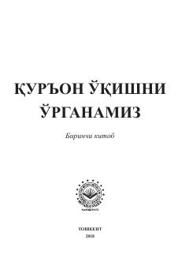

QOQur'oni Karimni o'qish va tajvid qoidalarini o'rganish uchun boshlang'ich qo'llanma.
Ushbu risola Ahmad Hodiy Maqsudiyning "Muallimi soniy" kitobi asosida tayyorlangan bo'lib, Qur'on o'rganuvchilarga qulay bo'lishi uchun tajvid qoidalari bilan уйғунлаштирилган. Kitobda arab alifbosi, harflarning talaffuzi, eng zarur tajvid qoidalari misollar yordamida bayon etilgan. Shuningdek, oxirida zarur duolar va imon kalimalari ilova qilingan.